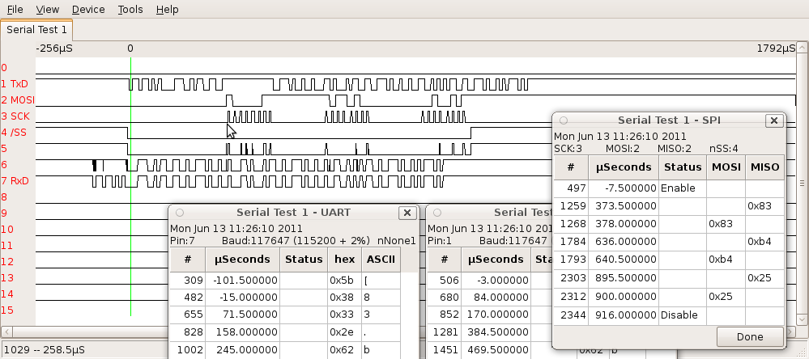

pyLogicSniffer is a graphic client for the Open Bench Logic Sniffer. It's programmed in Python2 using additional packages wxPython, Numpy and pySerial. It controls the Logic Sniffer via the SUMP communication protocol so the potential exists to extend it for other logic analyzer devices.
pyLogicSniffer allows data analyzers to be written as pluggable modules. Three analyzers are included with pyLogicSniffer. One analyzes Serial Peripherial Interface (SPI) data commonly used in embedded systems. Another analyzes UART data from asynchronous serial communication. A third analyzes I²C (aka TWI) signals.
pyLogicSniffer requires this installed software:
More information: